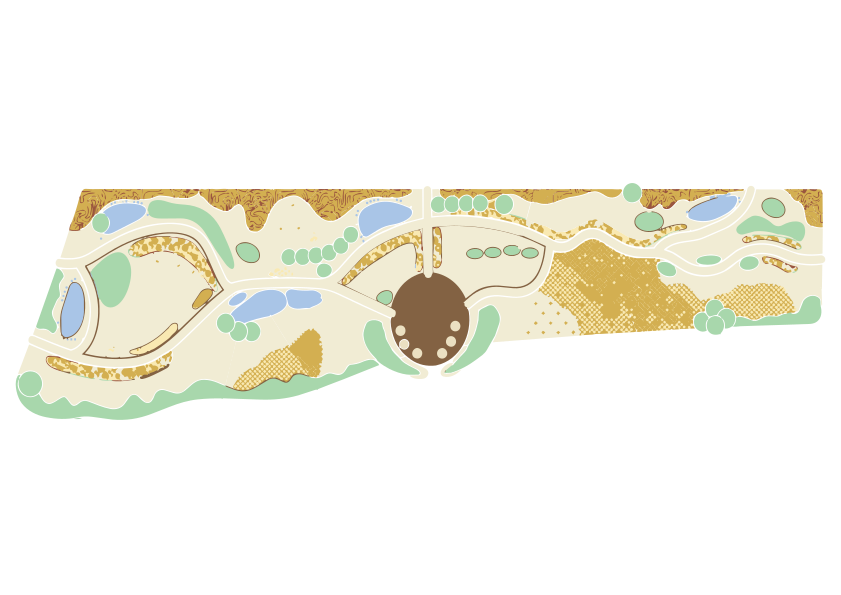
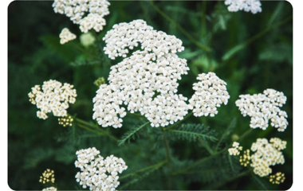

Witte Dovenetel
Lamium album

Lijkt op brandnetel maar prikt niet. Bloeit lang door zacht weer.
Ecologische rol: Hommels halen nectar via "gaatjes" in de bloem en voor veel vlinders een plant van waarde.